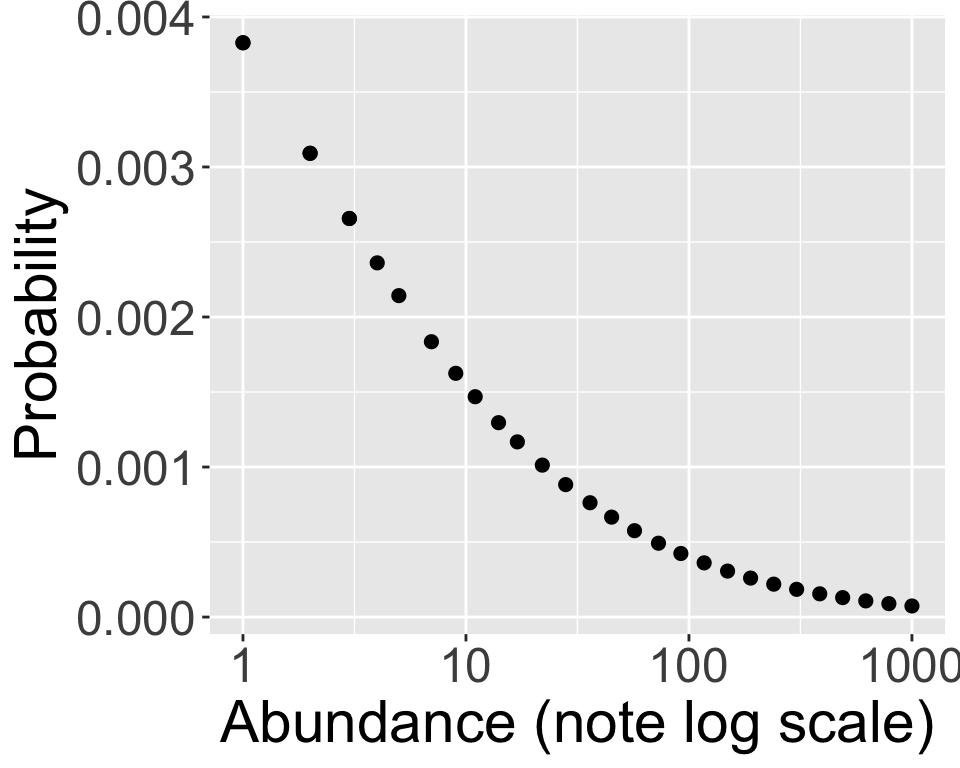
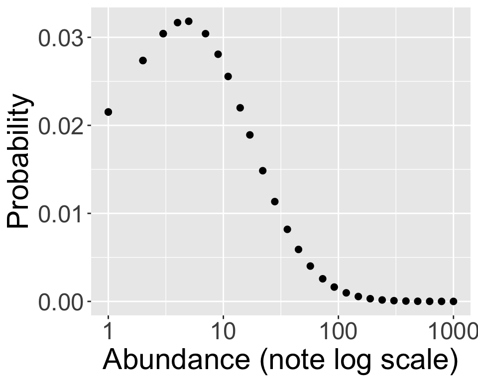
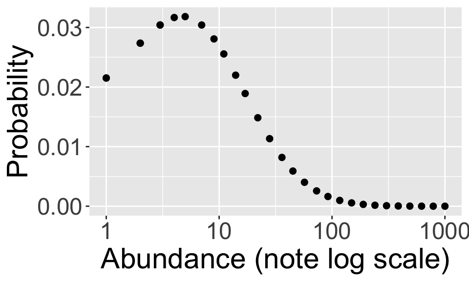
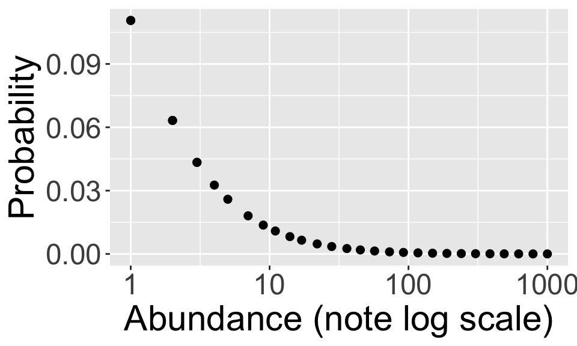

Bayesian inference for complex models
The species abundnace distribution
Ecology has spent a long time thinking about the probability distribution of abundances
The shape of the SAD
- figured in early and influential debates about ecological processes (Fisher et al. 1943; Preston 1962)
- is the focus of the unified neutral theory of biodiversity (Hubbell 2011)
- is still central to models of biodiversity, though we now know other biodiversity dimensions are important (Overcast et al. 2021)
The species abundnace distribution
Ecology has spent a long time thinking about the probability distribution of abundances
Most species are rare
But perhaps singletons are not the most frequent

The species abundnace distribution
Ecology has spent a long time thinking about the probability distribution of abundances
Log series distribution

Log normal distribution

The species abundnace distribution
Ecology has spent a long time thinking about the probability distribution of abundances
Turns out the Poisson log normal can accamodate both shapes and a gradient in between


The species abundnace distribution
The Poisson log normal
\[ \begin{aligned} \log(\lambda_i) &\sim \mathscr{N}(\mu, ~\sigma) \\ y_i &= \text{Pois}(\lambda_i) \end{aligned} \]
Some familiar looking things
- log link function for mean of Poisson
- but the mean comes from a distribution like a random effect
- adding some explanatory variables will reveal the random effect structure
The species abundnace distribution
The Poisson log normal as a random effects model
\[ \begin{aligned} \mu_i &= b_0 + b_1 x_{1i} \\ \log(\lambda_i) &\sim \mathscr{N}(\mu_i, ~\sigma) \\ y_i &= \text{Pois}(\lambda_i) \end{aligned} \]
Due to additive property of normal we can rearrange
\[ \begin{aligned} b_{\text{sp} ~i} &\sim \mathscr{N}(0, ~\sigma_\text{sp}) \\ \log(\lambda_i) &= b_0 + b_1 x_1 + b_{\text{sp} ~i} \\ y_i &= \text{Pois}(\lambda_i) \end{aligned} \]
The species abundnace distribution
The Poisson log normal as a random effects model
\[ \begin{aligned} b_{\text{sp} ~i} &\sim \mathscr{N}(0, ~\sigma_\text{sp}) \\ \log(\lambda_i) &= b_0 + b_1 x_1 + b_{\text{sp} ~i} \\ y_i &= \text{Pois}(\lambda_i) \end{aligned} \]
This is a random intercepts model, each species gets a random intercept
The species abundnace distribution
The Poisson log normal as a random effects model
At one sampling location, distribution of abundances will be distributed Poisson log normal
You might be thinking about overdispersion, Poisson log normal is already “overdispersed” and, in fact, quite similar to negative binomial
But what about SAD at another sampling location??


The species abundnace distribution
The Poisson log normal as a random effects model
\[ \begin{aligned} b_{\text{sp} ~i} &\sim \mathscr{N}(0, ~\sigma_\text{sp}) \\ b_{\text{site} ~j} &\sim \mathscr{N}(0, ~\sigma_\text{site}) \\ \log(\lambda_{ij}) &= b_0 + b_1 x_1 + b_{\text{sp} ~i} + b_{\text{site} ~j} \\ y_{ij} &= \text{Pois}(\lambda_{ij}) \end{aligned} \]
We need random intercepts for species and site
This model means that a common species will tend to be common everywhere (and a rare species rare everywhere), but there is random variation site-to-site due to demographic noise
The species abundnace distribution
The Poisson log normal as a random effects model
Why this is a challenging model
- Random effects models are already a challenge
- There are 528 plots
- There are 181 species
- Estimating (via likelihood or posterior) \(\sigma_\text{sp}\) and \(\sigma_\text{site}\) requires integrating over all those entities
- Mixing Poisson and (log) normal makes the necessary integrals all the more challenging
- Using MCMC means we do not need to do these integrals
Fitting the SAD with brm
Here is the code for just the random effects
Fitting the SAD with brm
How does it look?
Family: poisson
Links: mu = log
Formula: abund ~ (1 | Scientific_name) + (1 | PlotID)
Data: dat_sad (Number of observations: 2150)
Draws: 4 chains, each with iter = 4000; warmup = 1000; thin = 1;
total post-warmup draws = 12000
Multilevel Hyperparameters:
~PlotID (Number of levels: 528)
Estimate Est.Error l-95% CI u-95% CI Rhat Bulk_ESS Tail_ESS
sd(Intercept) 0.92 0.03 0.86 0.98 1.01 994 2692
~Scientific_name (Number of levels: 181)
Estimate Est.Error l-95% CI u-95% CI Rhat Bulk_ESS Tail_ESS
sd(Intercept) 1.17 0.07 1.03 1.32 1.00 1771 3685
Regression Coefficients:
Estimate Est.Error l-95% CI u-95% CI Rhat Bulk_ESS Tail_ESS
Intercept 0.98 0.10 0.78 1.17 1.00 755 1772
Draws were sampled using sampling(NUTS). For each parameter, Bulk_ESS
and Tail_ESS are effective sample size measures, and Rhat is the potential
scale reduction factor on split chains (at convergence, Rhat = 1).Modeling species abundances
With this approach we can now ask more interesting questions
- are native or non-native taxa more abundant?
- what variables determine the balance of native and non-native taxa?
References
Fisher RA, Corbet AS, Williams CB. 1943. The relation between the number of species and the number of individuals in a random sample of an animal population. The Journal of Animal Ecology:42–58. JSTOR.
Hubbell SP. 2011. The unified neutral theory of biodiversity and biogeography. The unified neutral theory of biodiversity and biogeography. Princeton University Press.
Overcast I et al. 2021. A unified model of species abundance, genetic diversity, and functional diversity reveals the mechanisms structuring ecological communities. Molecular Ecology Resources 21:2782–2800. Wiley Online Library.
Preston FW. 1962. The canonical distribution of commonness and rarity: Part i. Ecology 43:185–215. JSTOR.